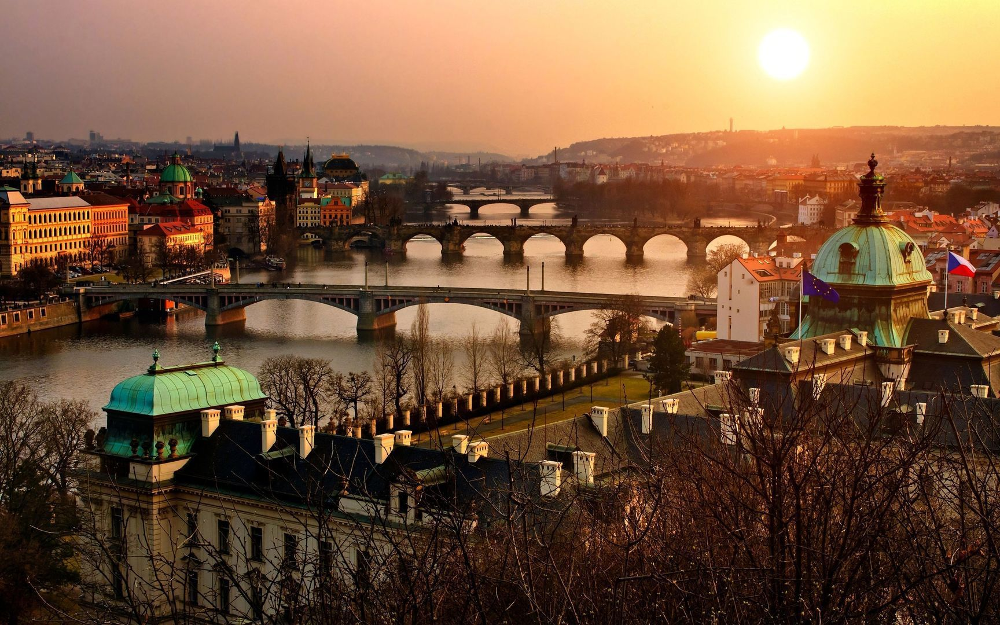

Vznik města spadá do doby, kterou můžeme nazvat bájnou dobou českých dějin.
Klaudios Ptolemaios , nejučenější zeměpisec starověku, jmenuje několik měst , které založili v Čechách Bojové,
keltský lid, jenž dal zemi jméno - Bojohemum. Žádným učencům naší doby se nepodařilo určit polohu těchto měst,
nezachovala se po nich žádná stopa. Zanikla asi v době nadvlády Markomanů, nebo při tažení Atilly Čechami v čele
barbarských hord.

Věříme tedy tradici, že Praha byla založena Libuší, ženou Přemyslova.Tento rod má významnou úlohu v
prvotních dějinách Čech, z tohoto rodu vznikla dynastie téhož jména. Libuše dala zemi první zákony a
určila postavení tvrze na vyvýšenině, kde dnes stojí Hradčany. Prorocky předpověděla před Přemyslem a
staršími lidu velikost a moc, jakou jednou vznikající město dosáhne. Jak krásně pro nás znělo a zní
její proroctví - vidím město veliké, jehož sláva hvězd se bude dotýkati. Volba místa, určeného k založení
hlavního města, ukazuje neobyčejnou správnost jejího vidění.